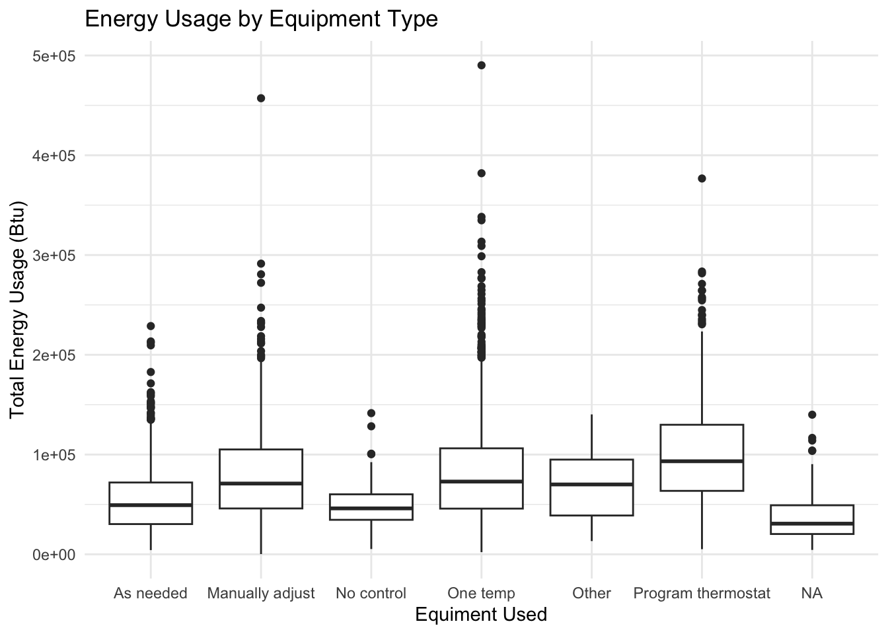
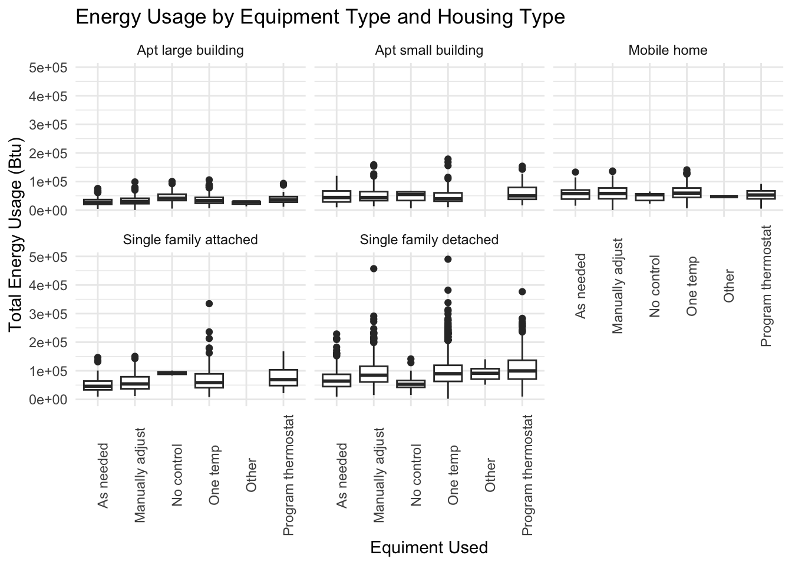
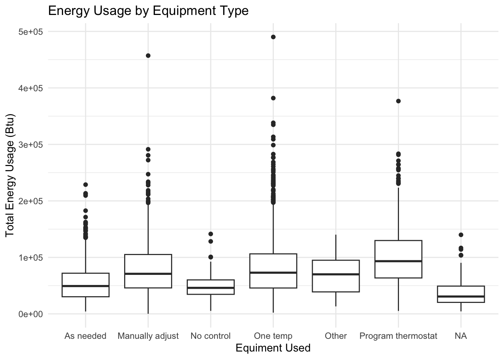
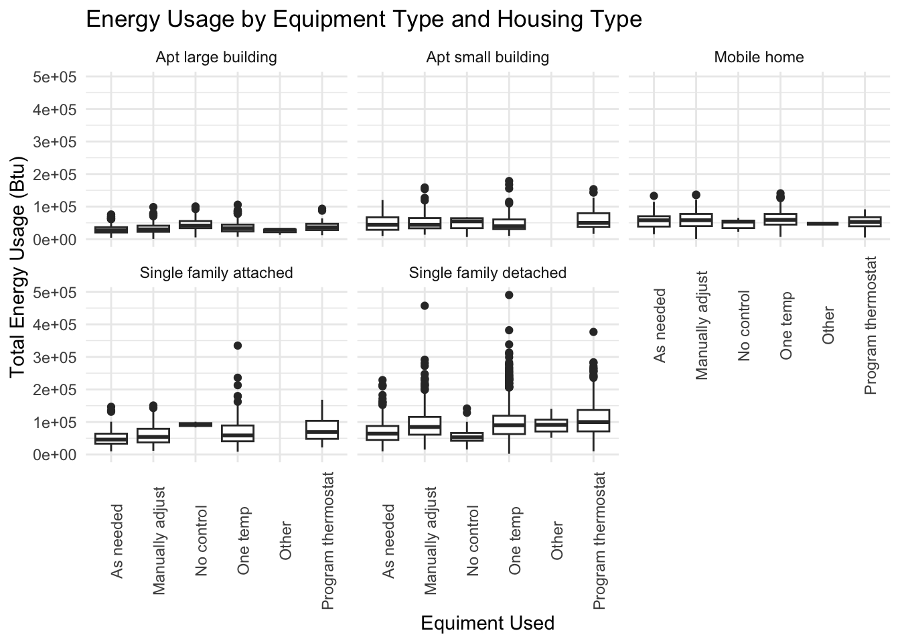
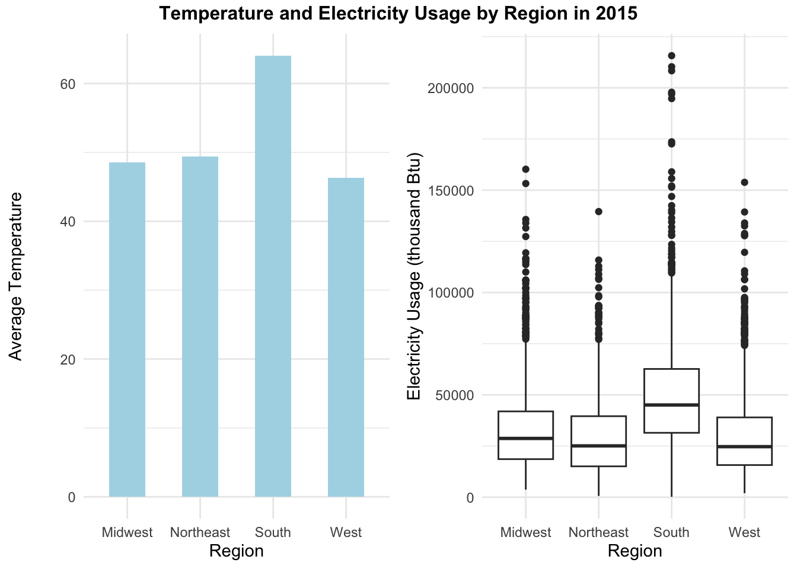
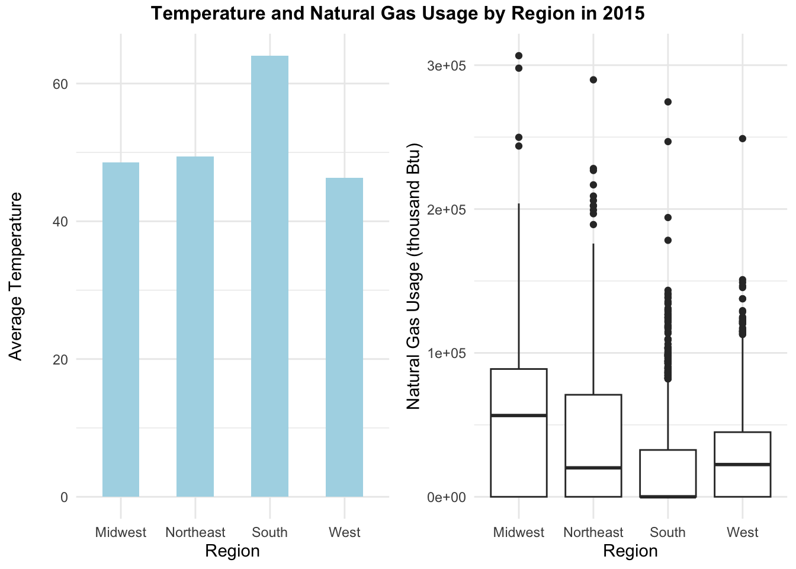

Team members: Lilabeth Sokolewicz, Zoey Yandell, Trung Dam
Energy consumption in residential spaces is a pivotal issue in our modern world. According the the U.S. Energy Information Administration, electricity sales to the residential sector accounted for 38.4% of total electricity retail sales in 2022 (https://www.eia.gov/energyexplained/electricity/use-of-electricity.php). Those sales were 2.6% larger than in 2021, and made up the largest proportion of energy sales to any sector (https://www.eia.gov/energyexplained/electricity/use-of-electricity.php). With increasing pressures of climate change and impacts on social equity and public health, understanding and optimizing energy use is crucial. Not only does it affect people’s wallets, it also holds immense implications for their environment and quality of life. Residential energy, as such a large and growing proportion of the United States’ overall energy consumption, must be targeted in mitigating the harmful impacts of energy usage.
Energy consumption is a significant contributor to carbon emissions and environmental degradation. As stated by the United States Environmental Protection Agency, “using electricity more efficiently reduces both the amount of fuel needed to generate electricity and the amount of greenhouse gases and other air pollution emitted as a result” (https://www.epa.gov/energy/learn-about-energy-and-its-impact-environment#impact). On the individual level, efficient energy consumption can lead to significant cost savings for households, and contribute to healthier and more comfortable living environments. Optimizing residential energy use is also a key component of achieving sustainable urban development and meeting climate goals. In this project, we delve into the intricacies of residential energy usage across different cities and states in the United States, exploring its driving factors, and illuminating the importance of this critical topic.
To address such a broad topic, we decided to focus on finding and analyzing data around residential energy use across different cities and states. We were particularly interested in what factors, like policy or technology, might impact regional differences in residential energy consumption. We therefore established two fundamental questions:
What impacts residential energy use across different cities and states?
How has this changed over time?
By narrowing our focus to these questions, we aimed to explore the complex issue of residential energy consumption, encompassing the interplay between geographical, technological, and policy-driven factors.
We first looked to explore where geographic variation in energy use exists, and to begin to investigate the impact of type and age of homes, as well as heating behaviors and equipment usage.
Through a series of boxplots comparing total energy usage with our variables, we found that not much difference exists based on a building’s location in a metro or micro region. Similarly, the decade in which the structure was built is not a strong indicator of its energy usage. Type of home was more variable, with single-family detached homes using most energy and large apartment buildings using the least. Homes that use space heating tend to use considerably more energy than those that do not, and, surprisingly, those that have no control over their building’s temperature generally use less energy than others. When we disaggregate this variable by home type, however, this does not appear to be universally true. A relatively small proportion of households have no control over their equipment use, and of that proportion, over half live in large apartment buildings, which tend to have lower overall energy use. Our surprisingly low energy use for “no control” homes can thus be attributed to this correlation.


Regionally, buildings in the South and West have lower energy consumption than those in the Northeast and Midwest. Southern and Western homes are much less likely to have heating systems than those in other regions. The South has higher median electricity use than any other region, likely to power air conditioning systems hose regions have higher max temperatures on average. Northeastern buildings, conversely, use the most natural gas of any region. The fact that Southern and Western buildings use less energy overall suggests that either warmer regions use less energy on cooling systems than colder regions do on heating systems, or that another variable obscures the true connection between temperature control and geographic energy use. Ultimately, this analysis highlights the necessity of tailored, region-specific energy policies and efficiency measures in addressing the nuances of residential energy consumption.


It’s important to acknowledge the limitations in our analysis. Currently, our data only contains information through 2015. As the characteristics of energy use have undoubtedly shifted significantly in the past nine years, going forward, we would love to incorporate more current data into our analysis. Specifically, the COVID-19 pandemic likely impacted residential energy consumption in a way that would have implications on our work. We also hope to dive deeper into the use of energy for buildings’ climate control systems. Since the need for heating and cooling vary heavily by region, we anticipate being able to account for much of the variability in energy usage by taking those factors into account.
In terms of ethical considerations, we strive to be mindful about the implications of our work in terms of data privacy and equity, as well as any potential impacts on vulnerable populations. For example, increasing energy efficiency standards might inadvertently raise housing costs, affecting affordability. However, we believe our exploration into the topic of residential energy consumption marks a step towards the knowledge to build a more sustainable future. In discussing the nuances of this issue, we hope to contribute to informed decision-making and efforts towards energy efficiency and environmental stewardship.